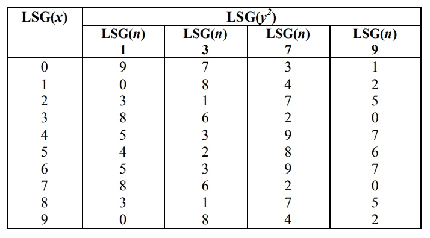
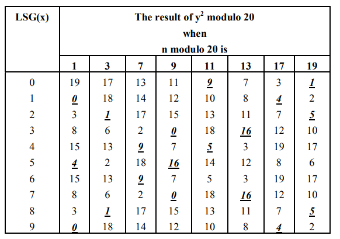
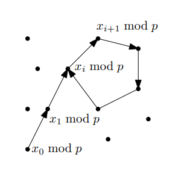

RSA
RSA算法的主要经过这样的一个过程：
选取两个素数\(p\)和\(q\)，计算模数\(n=p*q\)，并计算欧拉函数\(\phi(n)=(p-1)(q-1)\)。选取一个公钥指数\(e\)满足\(gcd(\phi(n), e)=1\)，计算私钥（解密指数）\(d\)满足\(ed\equiv 1(mod\ \phi(n))\)。销毁\(p,q,\phi(n)\).
RSA的公钥为\((n, e)\)，私钥为\((n, d)\)。
在加密时，对于明文\(m\)，计算\(c\equiv m^e(mod\ n)\)。在解密时，计算\(m\equiv c^d(mod\ n)\)。
可以看出，\(c^d(mod\ n)=m^{ed}(mod\ n)=m^{ed(mod\ \phi(n))}(mod\ n)=m(mod\ n)\)，能够满足加解密一致性。
RSA的安全性主要依赖于大整数分解的问题，也就是，在获取到公钥中的模数\(n\)的情况下，是很难分解\(n\)的模数\(p,q\)，否则很容易计算出私钥，进而破解RSA体系。
分解？
Fermat's Factorization Algorithm, FFA
费马分解法（Fermat's Factorization Algorithm）是一种常用的因数分解的算法。
常规的分解思路？
对于比较大的模数来说，直接进行暴力的分解算是非常低效的做法，基本上是不可能的。Fermat分解是一种算是比较快的做法，当\(n\)的因数比较接近\(n\)的平方根时，可以较快实现分解。
我们注意到有\(n=pq=(\frac{p+q}{2})^2-(\frac{p-q}{2})^2=a^2-b^2=(a+b)(a-b)\)，其中\(a=\frac{p+q}2,b=\frac{p-q}2\)。
因为\(n=(a+b)(a-b)=a^2-b^2\)的形式，那么\(a^2-n=b^2\)，我们从\(\lceil\sqrt{n}\rceil\)开始枚举\(a\)，使得\(a^2-n\)为一个完全平方数，令\(b=\sqrt{a^2-n}\)，那么\(n=(a+b)(a-b)\)就是对\(n\)的一个分解。
1 | # FFA-1 |
用Python实现的话这里有一个小坑，math.sqrt的精度是非常低的，这样子会导致math.sqrt(n)和\(\sqrt{n}\)实际上相差了非常多，影响最终结果。这边直接用了gmpy2的函数，实际上手搓一个迭代法慢慢算应该也可以。
这种算法实际上需要\(\frac{p+q}2-\lceil\sqrt{n}\rceil\)次迭代。不难想到基本不等式\(a+b\ge 2\sqrt{ab}\)，当且仅当\(a=b\)时取等于号。上面的不等式符合基本不等式的形式，当\(p\)和\(q\)相近时，分解速度较快。
另一种思路是：\(n=pq=(\frac{p+q}{2})^2-(\frac{p-q}{2})^2\)，也就是\(4n=(p+q)^2-(p-q)^2=u^2-v^2\)，其中\(u=p+q,v=p-q\)。我们可以枚举\(u,v\)，使得\(r=u^2-v^2-4n=0\)，就能够实现对\(n\)的分解。
那怎么样去迭代？注意到有\(p=\frac{u+v}2, q=\frac{u-v}2\)，我们枚举\(u,v\)的话，就要保证\(p\)和\(q\)都是整数，那么\(u,v\)的迭代步长就得是2。那么\(r\)迭代的步长也就得是\(\Delta u=(u+2)^2-u^2=4u+4,\Delta v=(v+2)^2-v^2=4v+4\)。合理。
那么，如果\(r>0\)，我们增加\(v\)，使得\(r\)减小趋近于0，也就是\(v\leftarrow v+2, r\leftarrow r-(4v+4)\)。反之，如果\(r<0\)，那么增加\(u\)，使得\(r\)增加趋近于0，也就是\(u\leftarrow u+2, r\leftarrow r+(4u+4)\)。
1 | # FFA-2 |
这样子计算的次数大约是\(p+q-2\lceil\sqrt{n}\rceil\)。
MFFV2, MFFV3, MFFV4...
MFFV2 and MNQSV2: Improved Factorization Algorithms给了一个优化的Fermat分解算法的思路，主要目的在于减少平方根计算的次数来优化运行时间。这个算法名字记为MFFV2(Modified Fermat Factorization Version 2)。
平方数的末位必定是1, 4, 9, 6, 5, 0，如果一个数的个位不是这些数字则其必定不是完全平方数。在FFA中，如果\(a^2-n\)的个位不是这些数那么就不需要再开平方根了，这能够节约一定的计算量。
1 | # MFFV2 |
MFFV2的循环次数相较于MFF-1并没有太多的改变，它的优化主要在于减少了平方根计算的次数。但是简单的利用个位判断减少的次数是有限的，还有更高的提升空间。
MFFV3在MFFV2的基础上，可以利用\(a\)和\(n\)的最低位来计算\(b^2\)的低位，相应减少了计算量。表上面\(x\)就是\(a\)。

1 | # MFFV3 |
相较于MFFV2，MFFV3能够减少更多的平方根计算以加快速度。
MFFV4在之前算法的基础上，通过Y2MOD20算法减少更多的计算次数。

图中加粗数字是需要计算平方根的情况。代码又臭又长。 1
2
3
4
5
6
7
8
9
10
11
12
13
14
15
16
17
18
19
20
21
22
23
24
25
26
27
28
29
30
31
32
33
34
35
36
37
38
39
40
41
42
43
44
45
46
47
48
49
50
51
52
53
54
55
56
57
58
59
60
61
62
63
64
65
66
67
68
69
70
71
72
73
74
75
76
77
78
79
80
81
82
83
84
85
86
87
88
89
90
91# MFFV4
def changeX(x, N):
if N == 1:
while x % 10 not in [1, 5, 9]:
x += 1
elif N == 3:
while x % 10 not in [2, 8]:
x += 1
elif N == 7:
while x % 10 not in [4, 6]:
x += 1
elif N == 9:
while x % 10 not in [3, 5, 7]:
x += 1
elif N == 11:
while x % 10 not in [0, 4, 6]:
x += 1
elif N == 13:
while x % 10 not in [3, 7]:
x += 1
elif N == 17:
while x % 10 not in [1, 9]:
x += 1
elif N == 19:
while x % 10 not in [0, 2, 8]:
x += 1
return x
def mffv4(n):
x = math.ceil(gmpy2.iroot(n, 2)[0])
n_mod20 = n % 20
x = changeX(x, n_mod20)
y, status = gmpy2.iroot(x * x - n, 2)
while not status:
if n_mod20 == 1:
# LSG(x) is 1, 5, 9
if x % 10 == 1:
x += 4
elif x % 10 == 5:
x += 4
else:
x += 2
elif n_mod20 == 3:
# LSG(x) is 2, 8
if x % 10 == 2:
x += 6
else:
x += 4
elif n_mod20 == 7:
# LSG(x) is 4, 6
if x % 10 == 4:
x += 2
else:
x += 8
elif n_mod20 == 9:
# LSG(x) is 3, 5, 7
if x % 10 == 3:
x += 2
elif x % 10 == 5:
x += 2
else:
x += 6
elif n_mod20 == 11:
# LSG(x) is 0, 4
if x % 10 == 0:
x += 4
else:
x += 6
elif n_mod20 == 13:
# LSG(x) is 3, 7
if x % 10 == 3:
x += 4
else:
x += 6
elif n_mod20 == 17:
# LSG(x) is 1, 9
if x % 10 == 1:
x += 8
else:
x += 2
else:
# n_mod 20 is 19
# LSG(x) is 0, 2, 8
if x % 10 == 0:
x += 2
elif x % 10 == 2:
x += 6
else:
x += 2
y, status = gmpy2.iroot(x * x - n)
return x - y, x + y
速度
1 | $ python test_ffa_speed.py |
用了一组不是太适合的数据，MFFV4的提升还是比较明显的。因为数据问题，MFFV2和MFFV3并没有相较于FFA表现出太多的提高。可行的情况下还是尽量用MFFV4.
FFA还有一些其他的变种算法，比如说SFFA-X之类的，主要的思路还是在于更加高效的寻找完全平方数，减少无意义的计算等。
Pollard's p-1 Algorithm
Pollard's p-1算法由Pollard在1974年提出，这个算法主要是利用群\(\mathbb{Z}_p\)的性质来寻找\(N\)的因子\(p\)。
我们知道Fermat小定理：
\(p\)为一个素数，\(a\in \mathbb{Z}\)且\(p\nmid a\)，那么\(a^{p-1}\equiv 1(mod\ p)\)。
对于一个需要去分解的整数\(n\)，如果存在一个素数\(p\)使得\(p\mid n\)，那么\(a^{p-1}\equiv 1(mod\ p)\)。我们令\(d=a^{p-1}-1(mod\ p)\)，那么显然有\(gcd(d,n)=p\)。当然了，这里要去保证\(a\)和\(p\)互素。
接下来的问题就是，我们并不知道\(p\)具体是多少。如果我们直接穷举指数\(m\)，也就是说我们计算\(m=1,2,3,...\)，直到找到一个\(m,d=a^m-1\)使得\(1<gcd(d,n)=p<n\)，显然，这个时候\(m=p-1\)。这样子确实能够计算出\(p\)，但是需要经过的迭代次数会是非常巨大的。
实际上，并不一定需要去寻找一个确切的\(m=p-1\)，只需要\(p-1\mid m\)就可以，如果\(m\)是一系列素数的乘积，是有挺大概率满足条件的。
算法步骤是这样的：
1、 选择一个上界\(B\)，一般在\(10^5\sim10^6\)范围内。
2、计算： \[ m=\prod_{p\ prime\atop1\le p\le B}p^{\lfloor log B/\log p\rfloor} \]
3、选择一个在\(1\)到\(n\)之间的随机正整数\(a\)。
4、计算\(d=gcd(a,n)\)，如果\(d=1\)，到下一步，否则返回\(d\)。
5、计算\(a^m\)和\(n\)。
6、计算\(e=gcd(a^m-1, n)\)，如果\(e=1\)，回到步骤一，增加\(B\)。如果\(e=n\)，回到步骤三修改\(a\)，否则返回\(e\)。
上界\(B\)会影响指数\(m\)的选取，增加上界可以提高算法找到分解的概率，但是相应的也会导致运行时间的增加。
1 | def pollard_p_1(n, B=50000): |
测试结果还行。
1 | N = 0x808627ced38a980d765454ac5dfefc10195f6fef9b35b52b742dbce2419c34080a3ef3e9673fea4dd629ff382155031ea6dcba8372d42c1862f32b2bee47e157fa7150c544635035f366f7d68234f56fa24180eb6a00a0f85c65aaeb455b8ed28f2285376cda786f8c658cfeb3752f3504a7256ea3dbd22eef20267d156fab51 |
实际上如果观察运行的细节的话，实际上下面这个部分占据了比较多的运行时间：
1 | for p in range(B): |
这一部分如果采用素数筛法、较快的概率性素性检测、快速幂的话，可以降低一定的运行时间。此外，也可以通过预先建表等方式，避免重复计算，可以显著降低运行时间。
有一种简化的思路是简化m的计算：
1 | def pollard_p_1(n: int): |
这样直接穷举幂次，可以避免计算m的过程，但是实际上可能会影响程序的可靠性。速度上实际也不如优化过的常规方法。
前面提到的FFA主要用于\(n\)的模数\(p,q\)相近的情况，而显然的，Pollard's p-1适用于不同的情况。下面来看：
一个整数\(n\)是x-光滑（x-smooth）的，当且仅当\(n\)的所有素因子都小于等于\(x\)。
这样子，上界为b的Pollard's p-1算法能够成功找到\(n\)的因子\(p\)当且仅当\(p-1\)是b-smooth的。显然的，我们计算的\(m\)为小于上界\(B\)的素数的幂的积，Pollard's p-1成功的条件是\(p-1\mid m\)，如果\(p-1\)是B-smooth的，那么\(p-1\)里面所有的因子都在\(m\)里面，并且幂次也会小于在\(m\)中的幂次，那么Pollard's p-1一定成功。
当然，这些的前提条件在于\(p-1\)是b-smooth的。因为\(p-1\)是有限的，那么肯定存在一个足够大的\(b\)满足条件，但是这样会带来巨大的性能损失，以至于算法并不会优于试除法。
简单的说，Pollard's p-1适用于\(\phi(n)\)的因子都很小的情况。
Pollard's rho Algorithm
太混沌了，太混沌了……
Pollard's rho算法是Pollard在1975年在A Monte Carlo method for factorization中提出的算法。
我们需要分解的整数为\(n=pq\)。我们采用一个\(x_{i+1}\equiv x_i^2+c(mod\ n)\)形式的递推式来生成一个伪随机数序列，计算\(Q_i=\prod_{j=1}^i(x_{2j}-x_j)\)，判断\(d_i=gcd(Q_i,n)\)是否满足\(1<d_i<n\)，如果是，则找到了一个对\(n\)的分解。
计算\(Q_i=\prod_{j=1}^i(x_{2j}-x_j)\)接着计算\(gcd(Q_i,n)\)实际上和独立计算i个\(gcd(x_{2j}-x_j,n)\)是一样的，这样的目的是为了节省\(\log n\)复杂度的GCD的计算开销。
那么问题在于为什么使用\(x_{2j}-x_j\)这种形式。
我们可以看一种简单粗暴的做法：
1 | def factorize(n): |
这样子确实能够分解n，但是存在的一个问题是，经过一定次数的迭代之后，有比较大的概率会生成两个一样的随机数，考虑到生日悖论，这概率还并不低，这会导致实际上的效果并不如朴素的试除法。
在Pollard's rho算法中，计算了\(gcd(n, x_{2j}-x_j)\)，其中\(x_j\)的取值必定是有限的，随着迭代，它迟早会出现循环。这里判断循环的方法是Floyd判环法。注意到我们计算了\(x_{2j}\)，每一次迭代，\(x_{2j}\)都比\(x_j\)多走一步，就像跑一千米被别人套圈一样，在循环中最后必定会超过\(x_j\)一圈，也就是会出现\(x_j\equiv x_{2j}(mod\ n)\)，这个时候停止迭代。
所以说为什么Pollard's rho算法叫做\(\rho\)算法？看一下迭代的过程中间画的图就是：

直接拿代码吧：
1 | def pollard_rho(n): |
不过这种算法似乎在分解RSA模数的情境下表现并不是十分出色。
Williams' p+1
对于\(p+1\)仅有比较小的模数的情况，Williams' p+1算法是一种可行的方法。这个方法整体的过程和Pollard's p+1算法还挺类似的。
Pollard's p-1算法前面先计算了 \[m=\prod_{p\ prime\atop1\le p\le B}p^{\lfloor log B/\log p\rfloor}\] 一种思路是采用Lucas序列来计算这个步骤。
Lucas序列
给出Lucas函数的定义：
\(P,Q\)为整数，\(\alpha,\beta\)为\(x^2-Px+Q\)的零元，定义Lucas函数（Lucas Function）： \[U_n(P,Q)=(\alpha^n-\beta^n)/(\alpha-\beta),V_n(P,Q)=\alpha^n+\beta^n\] 另记\(\Delta=(\alpha-\beta)^2=P^2-4Q\).
通过\(P=\alpha+\beta,Q=\alpha\beta\)等置换可以得到：
\[ \begin{aligned} (1)&\begin{cases} U_{n+1}=PU_n-QU_{n-1}\\ V_{n+1}=PV_n-QV_{n-1} \end{cases}\\[2ex] (2)&\begin{cases} U_{2n}=V_nU_n\\ V_{2n}=V_n^2-2Q^n \end{cases}\\[2ex] (3)&\begin{cases} U_{2n-1}=U^n-QU_{n-1}^2\\ V_{2n-1}=V_nV_{n-1}-PQ^{n-1} \end{cases}\\[2ex] (4)&\begin{cases} \Delta U_n=PV_n-2QV_{n-1}\\ V_n=PU_n-2QU_{n-1} \end{cases}\\[2ex] (5)&\begin{cases} U_{m+n}=U_mU_{n+1}-QU_{m-1}U_n\\ V_{m+n}=V_mV_{n+1}-QV_{m-1}V_n \end{cases}\\[2ex] (6)&\begin{cases} U_n(V_k(P,Q),Q^k)=U_{nk}(P,Q)/U_k(P,Q)\\ V_n(V_k(P,Q),Q^k)=V_{nk}(P,Q) \end{cases} \end{aligned} \]
如果\(\gcd(N,Q)=1\)，并且\(P'Q\equiv P^2-2Q(mod\ N)\)，那么有\(P'\equiv \alpha/\beta+\beta/\alpha\)，\(Q'\equiv \alpha/\beta\cdot \beta/\alpha=1\)，因此有： \[ U_{2m}(P,Q)\equiv PQ^{m-1}U_m(P',1)(mod\ N) \]
以及这样的性质：
引理： 对于奇素数\(p\)，\(p\nmid q\)且记Legendre符号\((\Delta|p)=\varepsilon\)，有： \[ \begin{aligned} &U_{(p-\varepsilon) m}(P,Q)\equiv 0(mod\ p)\\ &V_{(p-\varepsilon)m}(P,Q)\equiv 2Q^{m(1-\varepsilon)/2}(mod\ p) \end{aligned} \]
算法
我们要求\(p\)是\(N\)的一个模数，并且：
\[ p=(\prod_{i=1}^kq_i^{\alpha_i})-1 \]
其中\(q_i\)是满足\(q_i^{\alpha_i}\le B\)的第\(i\)个因子，和前面Pollard's p-1类似。明显的，对于\(m=\prod_{p\ prime\atop1\le p\le B}p^{\lfloor log B/\log p\rfloor}\)，有\(p+1|m\).
此外，根据Lucas序列的性质（引理），如果\(\gcd(Q,N)=1\)并且Legendre符号\((\Delta|p)=-1\)，那么\(p|U_m(P,Q)\)，也就是\(p|\gcd(U_R(P,Q),N)\).
这样子需要解决的问题就是如何去寻找\(U_R(P,Q)\)。前面提及的Lucas序列的性质可以实现：
\[ \begin{aligned} U_{2n-1}=&U^2_n-Q_{n-1}^2\\[2ex] U_{2n}=&U_n(PU_n-2QU_{u-1})\\[2ex] U_{2n+1}=&PU_{2n}-QU_{2n-1} \end{aligned} \]
这样子的问题在于，经过一定次数的迭代之后，数据会变得异常的大（其实Pollard's p-1也遇到了一样的问题……）
我们注意到，如果\(p\mid U_R(P,Q)\)，那么根据\(U_{2n}=V_nU_n\)，显然有\(p\mid U_{2R}(P,Q)\)，不失一般性的，我们假设\(Q=1\)，那么\(p\mid U_R(P',1)\)。这样，又有\(V_{(p-\varepsilon)m}(P,1)\equiv 2(mod\ p)\)。
也就是说，如果\(p\mid U_R(P,1)\)，那么\(p\mid (V_R(P,1)-2)\)。
Williams' p+1算法的第一步是这样的：
令\(R=r_1r_2r_3...r_m=\prod_{i=1}^m{q_i}^{\alpha_i}\)，找到一个满足\(\gcd(P_0^2-4,N)=1\)的\(P_0\)。定义\(V_n(P)=V_n(P,1),U_n(P)=U_n(P,1)\)，\(P_j\equiv V_{r_j}(P_{j-1})(mod\ N)(j=1,2,3,...,m)\).
明显有\(P_m\equiv V_R(P_0)(mod\ N)\)，接下来就可以计算\(\gcd(P_m-2,N)\)实现分解。
利用前面Lucas序列的性质，我们可以通过这样的方式来计算\(V_r(P)\)：
\[ \begin{cases} \begin{aligned} &V_{2f-1}\equiv V_fV_{f-1}-P,\\[2ex] &V_{2f}\equiv V_f^2-2,\\[2ex] &V_{2f+1}\equiv PV_f^2-V_fV_{f-1}-P(mod\ N) \end{aligned}, \end{cases} \]
当\(r=\sum^t_{i=1}b_i2^{t-i}(b_i=0,1)\)，同时有\(f_0=1,f_{k+1}=2f_k+b_{k+1},f_t=r\)
如果\(V_0(P)=2,V_1(P)=P\)，那么还有这样的式子：
\[ (V_{f_{k+1}},V_{f_{k+1}-1})= \begin{cases} (V_{2f_k},V_{2f_k-1}),b_{k+1}=0,\\ (V_{2f_k+1},V_{2f_k}),b_{k+1}=1 \end{cases} \] 结合上面的式子，我们可以完成对序列\(V\)的计算。
感觉太复杂了x
实际上除了这些还有筛法等更加高效的算法，不过暂时还没懂所以说之后再写……
RSA共模攻击(RSA Commom Modulus Attack)
考虑这样子的一个情况：
一个发送者使用了自己的模数\(n\)，但是不同的公钥指数\(e_1,e_2\)，同时有\(gcd(e_1,e_2)=1\)。这样子，我们得到：
\[ \begin{cases} c_1\equiv m^e_1(mod\ n)\\[2ex] c_2\equiv m^e_2(mod\ n) \end{cases} \]
因为上面有\(gcd(e_1,e_2)=1\)，那么由exgcd算法可以知道存在整数\(s,t\)使得\(se_1+te_2=1\)，这样子有\(c_{1}^sc_{2}^t\equiv (m^{e_1})^s(m^{e_2})^t\equiv m^{e_1s+e_2t}\equiv m(mod\ n)\)。
完事，这个简单。
小公钥指数攻击(RSA Low Public Exponent Attack)
如果RSA的公钥指数\(e\)比较小的话（并且截获了多段明文），是可以利用中国剩余定理实现小公钥指数攻击。
中国剩余定理（CRT）
中国剩余定理是用来求解一次同余方程组的算法。
中国剩余定理： 正整数\(m_1,m_2,...,m_k\)两两互素，对于任\(k\)个整数\(a_1,a_2,...,a_k\)，同余方程组： \[ \begin{cases} x\equiv a_1(mod\ m_1)\\[2ex] x\equiv a_2(mod\ m_2)\\[2ex] ...\\[2ex] x\equiv a_k(mod\ m_k) \end{cases} \] 必定有解且唯一，解为: \[ x\equiv \sum_{i=1}^kM_iM_i^{-1}a_i(mod\ m) \] 其中\(m=\prod^k_{j=1}m_j,\forall 1\le j\le k,M_j=\frac{m}{m_j},M_j\cdot M_j^{-1}\equiv 1(mod\ m)\).
证明分为两个部分，第一部分证明解\(y_0\equiv\sum_{i=1}^kM_iM_i^{-1}a_i(mod\ m)\)的正确性。
因为\(m_1,m_2,...,m_k\)两两互素，所以必定有\(gcd(m_j,M_j)=1\)，也就是\(M^{-1}_j\)一定是存在的。\(M_j\cdot M_j^{-1}\equiv 1(mod\ m),m_i\mid M_j(i\neq j)\)，那么
\[ \forall 1\le j\le k,y_0\equiv M_jM_j^{-1}a_j(mod\ m_j)\equiv a_j(mod\ m_j) \]
显然满足解的正确性。
接下来第二部分证明解的唯一性。假设存在两个解\(y_0,y_1\)，那么必定有\(\forall 1\le j\le k,y_1\equiv y_2(mod\ m_j)\)，而\(m_1,m_2,...,m_k\)两两互素，有\(m=m_1m_2...m_k=lcm(m_1,m_2,...,m_k)\)，那么明显有\(y_1\equiv y_2(mod\ m)\)，也就证明了解的唯一性。
攻击实现
如果一个攻击者连续使用不同的模数\(n_1,n_2,...,n_k\)和公钥指数\(e\)加密一系列相同的明文\(m\)得到密文\(c_1,c_2,...,c_k\)，同时公钥指数\(e\)并不大（\(e\le k\)）。
这样就会满足使用小公钥指数攻击的条件，我们注意到加密的结果满足：
\[ \begin{cases} m^e\equiv c_1(mod\ n_1)\\[2ex] m^e\equiv c_2(mod\ n_2)\\[2ex] ...\\[2ex] m^e\equiv c_k(mod\ n_k) \end{cases} \]
令\(a_k=m^e\)，我们可以使用中国剩余定理求解出\(a\equiv m^e(mod\ \prod_{i=1}^k n_i)\)，接下来直接对\(a\)开\(e\)次根号就可以求解。
一个特殊的情况在于，如果\(e\)非常小，同时\(m\)远小于\(n\)，可以令\(m^e=kn+c,k\in N^*\)，穷举k求解。
总结（？）
这边也就是几种特别常见的简单的方法，还有像CopperSmith这样的暂时还没懂所以说还要再看论文……
就这些也折腾了好久啊，也看了好几篇原论文（有啥用……）
参考资料
[1] K. Somsuk and S. Kasemvilas, "MFFV2 and MNQSV2: Improved Factorization Algorithms," 2013 International Conference on Information Science and Applications (ICISA), 2013, pp. 1-3, doi: 10.1109/ICISA.2013.6579415.
[2] K. Somsuk, "A new modified integer factorization algorithm using integer modulo 20's technique," 2014 International Computer Science and Engineering Conference (ICSEC), 2014, pp. 312-316, doi: 10.1109/ICSEC.2014.6978214.
[3] Williams, H. C. “A \(p + 1\) Method of Factoring.” Mathematics of Computation, vol. 39, no. 159, American Mathematical Society, 1982, pp. 225–34, https://doi.org/10.2307/2007633.
[4] Pollard, J. M. (1975). "A Monte Carlo method for factorization". BIT Numerical Mathematics. 15 (3): 331–334. doi:10.1007/bf01933667.